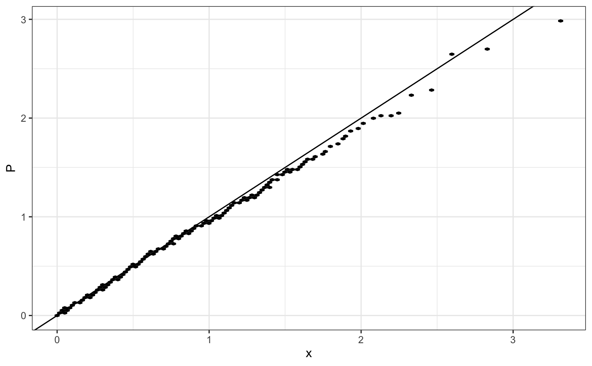
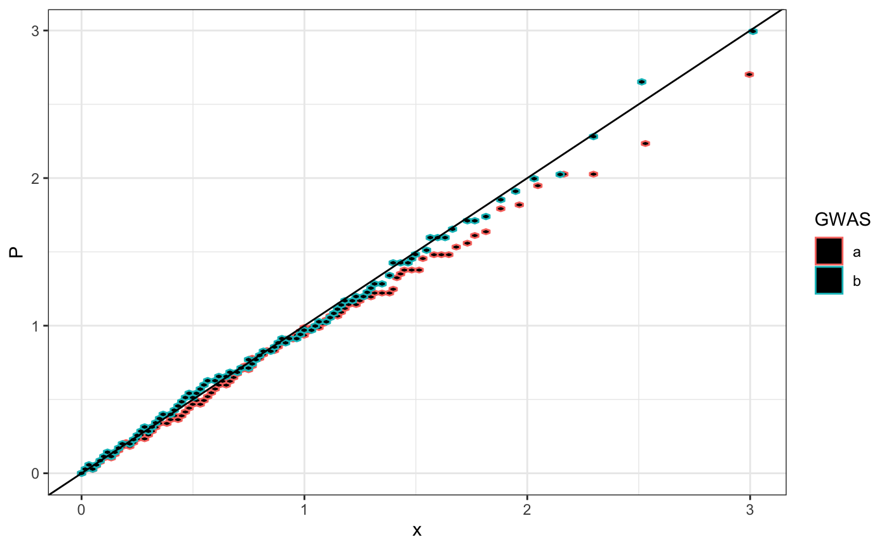

stat_gwas_qq_hex.RdDensity-like QQ-plot with hexagons for high-dimensional data.
stat_gwas_qq_hex(mapping = NULL, data = NULL, geom = "hex", position = "identity", na.rm = FALSE, bins = 30, binwidth = NULL, show.legend = NA, inherit.aes = TRUE, y.thresh = NULL, hex.function = hexBinSummarise, fill = "black", ...) geom_gwas_qq_hex(mapping = NULL, data = NULL, geom = "hex", position = "identity", na.rm = FALSE, bins = 30, binwidth = NULL, show.legend = NA, inherit.aes = TRUE, y.thresh = NULL, hex.function = hexBinSummarise, fill = "black", ...)
| mapping | Set of aesthetic mappings created by |
|---|---|
| data | The data to be displayed in this layer. There are three options: If A A |
| geom | Override the default connection between |
| position | Position adjustment, either as a string, or the result of a call to a position adjustment function. |
| na.rm | If |
| bins | numeric vector giving number of bins in both vertical and horizontal directions. Set to 30 by default. |
| binwidth | Numeric vector giving bin width in both vertical and
horizontal directions. Overrides |
| show.legend | logical. Should this layer be included in the legends?
|
| inherit.aes | If |
| y.thresh | Same scale as y (e.g. 0.05), y <= y.thresh AFTER computing expected. |
| hex.function |
|
| fill | color by which hexagons are filled, by default black. |
| ... | Other arguments passed on to |
Code and documentation mostly from https://github.com/tidyverse/ggplot2/blob/master/R/stat-binhex.r.
stat_bin_hex
Variables computed by stat_gwas_qq_hex:
Observed P-value quantiles
Expected/theoretical quantiles
require(ggplot2) n.sample <- 1000 df <- data.frame(P = runif(n.sample), GWAS = sample(c("a", "b"), n.sample, replace = TRUE )) theme_set(theme_bw()) (qp <- ggplot(df, aes(y = P)) + stat_gwas_qq_hex() + geom_abline(intercept = 0, slope = 1))(qp <- ggplot(df, aes(y = P, group = GWAS, color = GWAS)) + stat_gwas_qq_hex() + geom_abline(intercept = 0, slope = 1))